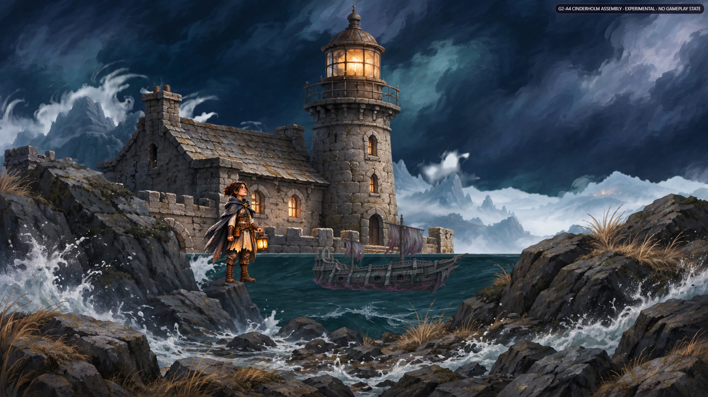
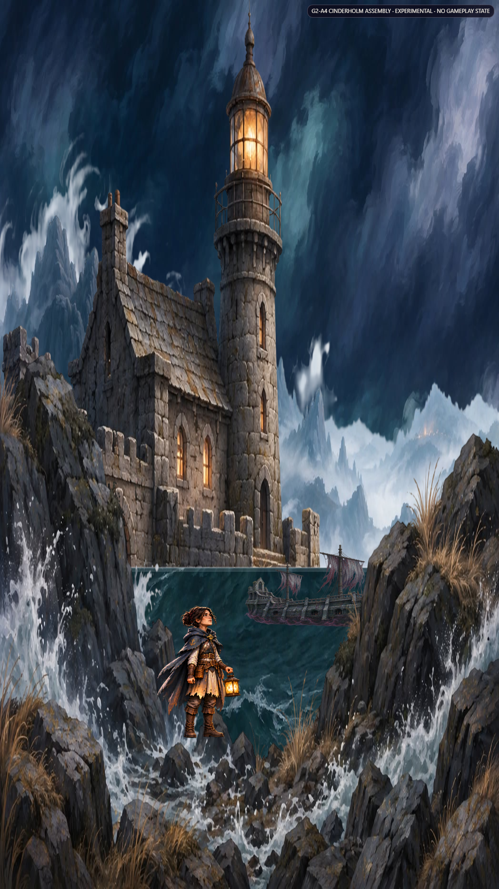
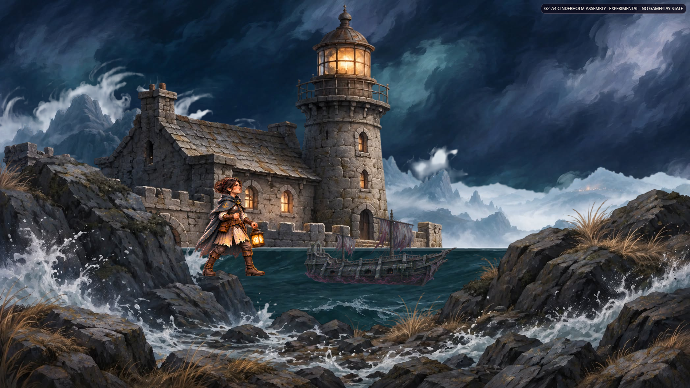
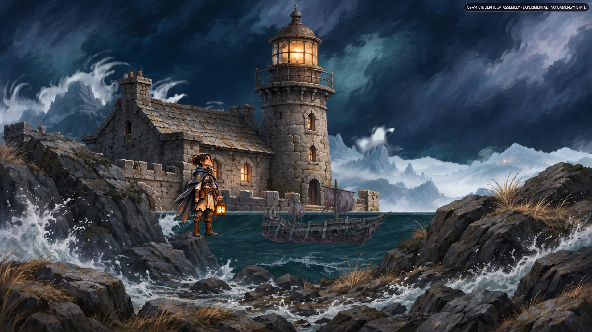
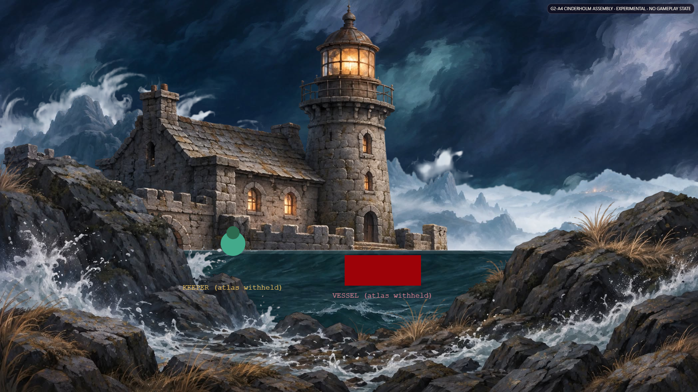

Review only. Originals in this folder are unmodified. This file is new and references them. Priority order per brief: landscape-idle, portrait-idle, landscape-strike-lock, landscape-reduced, landscape-noatlas. Plates: design/art-bible/working/p1-environment/ (5 layers).





P1 plates (not copied here — read-only source): p1-sky/tidebound-sky-1.jpg · p1-farmountains/tidebound-farmountains-1-png.png · p1-castlewithlighhouse/tidebound-castle-lighthouse.png · p1-waves/tidebound-waves-1.jpg · p1-frontrocks/tidebound-frontstones.png